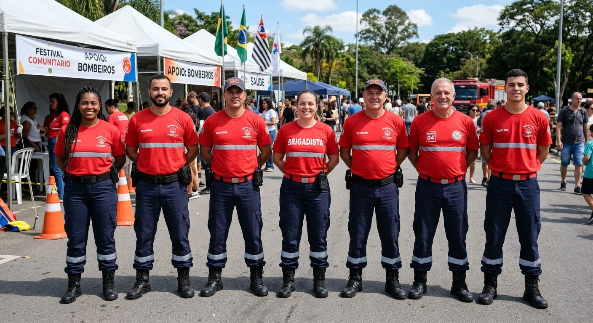

VANTAGENS DO SERVIÇO
Com o serviço de Bombeiro Civil da Orion GP, organizadores e participantes contam com uma estrutura de segurança ainda mais completa e preparada para emergências. A atuação preventiva reduz significativamente os riscos, enquanto a pronta resposta em situações críticas garante mais tranquilidade e confiança durante todo o evento. Profissionais qualificados contribuem para um ambiente seguro, organizado e com suporte imediato em casos de necessidade.